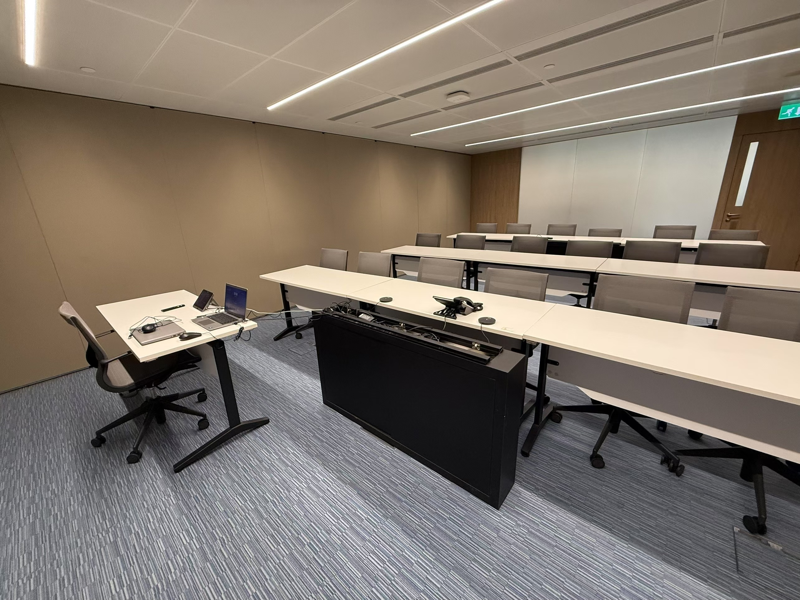
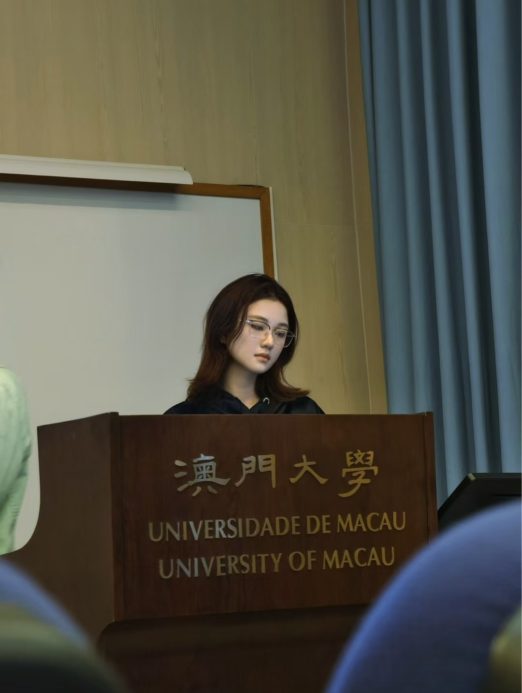

Hi, I’m Li Wu Yue.
A Web Programming learner focused on control verification & robotics simulation.
About Me
Hello admissions committee my name is Wuyue Li. I’m a CS graduate in University of Macau. Let me tell you a bit about myself. Before we dive into the serious stuff, here’s what I’m like beyond the screen. I’ve been painting traditional Chinese art since I was seven—over ten years now. It’s the longest thing I’ve ever stuck with. When I’m stressed or feeling lost, I paint. It keeps me centered, and makes me more patient when I’m coding or working on projects. I also love to walk my dog every day. He’s just one year old—super good-looking, but super shy. I likes getting my hands dirty during my work—give me something messy and real, and I’ll keep pushing until it becomes something actually useful. And I genuinely enjoy programming with people, arguing over ideas, and seeing a team ship something we’re proud of. My interest in computer science, particularly artificial intelligence, has grown steadily through coursework, projects, and research. Motivated by both academic curiosity and practical experience, I hope to pursue a graduate degree in computer science with a focus on AI, especially natural language processing (NLP) and machine learning. During my undergraduate studies, I established a solid foundation in programming, algorithms, and data structures, before focusing on AI. Advanced courses in natural language processing, pattern recognition, and machine learning sparked my interest in how machines interpret human language, from neural network design to models like BERT that capture semantic meaning. This interest was reinforced by projects such as using CNNs for sentiment classification and my work on data annotation in an NLP research group, where I saw how theory is applied in practice. Through these experiences, I became fascinated not only by how models learn patterns in text but also by how model design shapes linguistic understanding. They showed me that AI, and natural language processing in particular, can make human-computer communication more natural and impactful. The rapid development of transformer-based large language models and their growing ability to perform reasoning and contextual learning have convinced me that natural language processing will be central to next-generation human-computer interaction. I am eager to continue my studies and strengthen my theoretical foundations in areas such as multilingual processing and semantic understanding, while also exploring advanced techniques like few-shot learning and lightweight model design. Ultimately, I hope to apply AI to practical challenges, such as cross-border communication and intelligent customer service, enabling machines to understand language and provide effective support.
- Focus: NLP + ML + Web programming fundamentals + maintainable CSS
- Interest: robotics simulation, control verification, flight-capable systems
- Strength: consistent learning logs and measurable outcomes
Quick Facts
Location: Beijing, China
Email: dc22911@um.edu.mo
GitHub: https://github.com/Verenaaa123
.
Photo Gallery



These photos help stakeholders recognize me and understand my academic/professional profile.
Highlights
What I’m building
A multi-page personal site with one-page sections per page.
What I’m learning
HTML semantics, float layout + clearfix, responsive basics, and validation.
What I want next
Better UI polish, accessibility checks, and SEO-friendly structure.